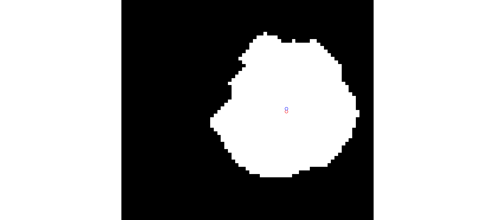
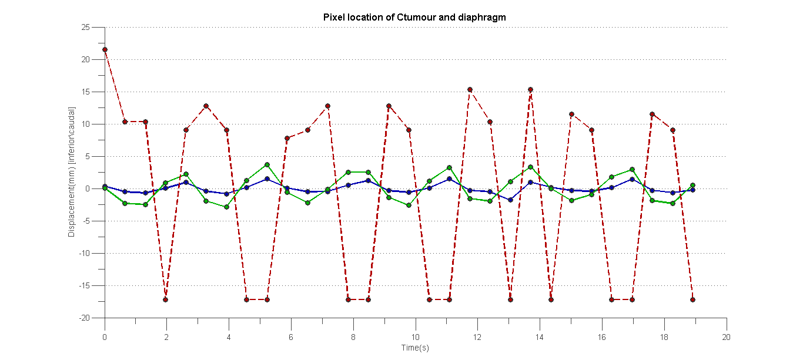
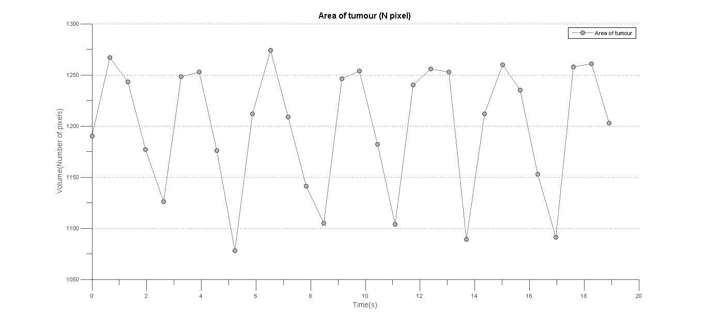
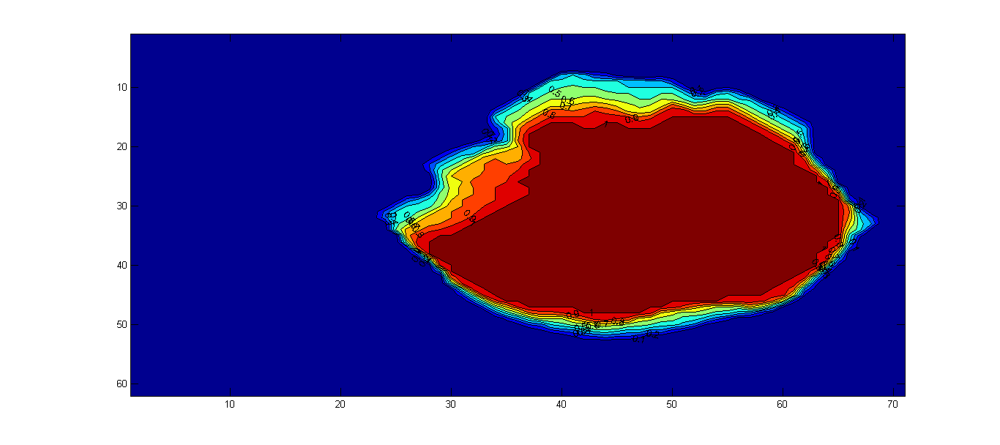

Contents
- Documents
- Clearing and some default settings
- Reading the Data
- Searching for the initial crop coordinates and FeatureExtraction Coordinates
- For Original Image
- Gaussian filter
- Combining Histogram
- Test of multiple frame
- Computing the number of Outlying peaks on histogram
- Segmentation of Tumour
- Segmentation method 2: Local Otsu method
- Segmentation of Diaphragm
- Features Extraction
- Verification Section
- Plots
- Density Plot
Documents
%Test case for programs in GUI: loading all files as usual, but stop % before segmenting, would be changes to test all different segmentation % methods
Clearing and some default settings
clear all close all % docked figures are easier to manage set(0,'DefaultFigureWindowStyle','docked') % Matlab complains a lot in dock format iptsetpref('ImshowInitialMagnification', 'fit') warning('off','Images:imshow:magnificationMustBeFitForDockedFigure'); %Suppress Docked Fit Warning % set(0,'DefaultFigureWindowStyle','normal') %Load All functions addpath('C:\Users\Minghao\Desktop\research project\GUI\functions') % % supress all figure!!! for publishing for now % set(0,'DefaultFigureVisible','off') handles.cropcor1 = [51.51,94.51,75.98,51.98]; handles.cropcor2 = [23.51,201.51,84.98,52.98];
Reading the Data
Using matlab UI to navigate into the responding folder
[fName,pName] = uigetfile('*', 'Load data'); handles.pName = pName; % to pass this directory for other function if pName == 0, return; end % dicomlist = dir(fullfile(pName,'Images','*.dcm')); handles.dicomlist = dir(fullfile(pName, '*')); %Generating a list of filename for reading in that directory, based on the 1st letter on the name handles.dicomlist(~strncmp({handles.dicomlist.name}, fName(1), 1)) = []; % this yank out those files that isn't start with the same 1st letter as selected file % handles.dicominfo = dicominfo(fullfile(pName,handles.dicomlist(1).name)); %reading dicominfo from the very 1st file % Sorting the image, so that the order of time/frame are consistent % chronologically [handles.fname inx]= sort_nat({handles.dicomlist.name}); handles.dicomlist = handles.dicomlist(inx); for cnt = 1 : numel(handles.dicomlist) handles.data{cnt} = im2double(dicomread(fullfile(pName,handles.dicomlist(cnt).name))); % directory reading of dicom files handles.info{cnt} = dicominfo(fullfile(pName,handles.dicomlist(cnt).name)) ; end %Setting up ImgFolder for items handles.ImageFolder = pName; %passing the directory path to textbox/display
Searching for the initial crop coordinates and FeatureExtraction Coordinates
Read for crop coordinate data and This search the Image folder for predata.txt, that is supposed to recorded the relevent cropping detaisl
handles.predataName = 'predata.txt'; if exist(fullfile(pName, handles.predataName), 'file') % File exists. Do stuff.... % % Display that notice the user there is pre-existing crop region % txtInfo = sprintf('There is pre-existing crop region \n cropping and thresholding will generate new predata.txt'); % set(handles.txtbox, 'string', txtInfo); % Read the File, and output it into matrix M = dlmread(fullfile(pName, handles.predataName)); % Updating crop coordinates and method's option handles.cropcor1 = M(1,:); handles.cropcor2 = M(2,:); % handles.MethodV = M(3,1); try handles.ExtractionCor = M(3,:); % catch exception % figure, imshow(handles.I1{cnt}) % [impixel end else % File does not exist. % Display that notice the user there is not pre-existing crop region txtInfo = sprintf('There is no pre-existing crop region \n will generate predata.txt after cropping and thresholding \n handles.cropcor1'); set(handles.txtbox, 'string', txtInfo); end % hence after crop and imagesegmentation, write it to the file, though this would % require sharing of pName, fullFileName as handles dlmwrite(fullfile(handles.pName, handles.predataName), ... [handles.cropcor1; handles.cropcor2])
For Original Image
%This section would crop the relevent section, while aso preserving the I1 %and I2 original cropping for comparison later on. %Cropping and Saving as two cells for cnt = 1 : numel(handles.dicomlist) handles.I1{cnt} = imcrop(handles.data{cnt},handles.cropcor1); handles.I2{cnt} = imcrop(handles.data{cnt},handles.cropcor2); % times 2 because of the orignal half int end for cnt = 1 : numel(handles.dicomlist) oriI1{cnt} = handles.I1{cnt}; oriI2{cnt} = handles.I2{cnt}; end % %Depiciting the Image % figure, imhist(handles.I1{1}), title('Original Image Histogram') % figure, imshow( handles.I1{1},[])
Gaussian filter
applying gaussian filter to OriginalLocal histogram and CLAHE processed frame just to check the influence
for cnt = 1 : numel(handles.dicomlist) handles.Gdata{cnt} = Gaussian_fn(handles.data{cnt}, 3,2) ; handles.GI1{cnt} = Gaussian_fn(handles.I1{cnt}, 3,2) ; handles.GI2{cnt} = Gaussian_fn(handles.I2{cnt}, 3,2) ; end
Combining Histogram
Test of multiple frame
to compare histogram varies between frames obviously should be kept within the range of number of frames It seems the original histogram stack on top one another too much, hence, to compare them, I guess this test would be best to be use on Local Histogram, as it has the best spread, however, it is actually only known after comparing all of them. Filters such as Gaussian, median is thought to have no influence here.
test = [1 5 13 20 22 25 30]; % Well, apparently, it seems like from the whole dicom image that the % suppression is caused by blood in aorta arch
Computing the number of Outlying peaks on histogram
Segmentation of Tumour
LineWidth = 2;
Segmentation method 2: Local Otsu method
I would expect the same result, but doing local should have the benifit it doing without the OtsuBinV control, at least, for most cases. In the 1st frame, it is observed that LO has better result, though whether that is conslusive remain to be seen
% In both case, the Gaussian filtered image is the best, Histogram % Localisation and CLAHE doesn't seems to aid in segmentation much, though, % perhaps looking at more frame, more data sets is require for any % conclusion handles.OtsuBinV = 2; for cnt = 1 : numel(handles.dicomlist) handles.LOGI1{cnt} = otsu(handles.GI1{cnt},handles.OtsuBinV)*handles.OtsuBinV; end % % going through to depict imshow on test frames, % for i = 1 : 7 % h=figure('Name','Local Otsu method on Gaussian data'),... % imshow(handles.I1{test(i)},[],'InitialMagnification',100), title({'Local Otsu method on Gaussian data'}); % [B,L] = bwboundaries(handles.LOGI1{test(i)},'noholes'); % hold on % for k = 1:length(B) % boundary = B{k}; % plot(boundary(:,2), boundary(:,1), 'r', 'LineWidth', LineWidth) % end % hold off % set(gca,'position',[0 0 1 1],'units','normalized') % % saveas(h,['C:\Users\Minghao\Desktop\research project\Thesis\OtsuSegmentation\' handles.dicomlist(i).name '.png']) ; % end
Segmentation of Diaphragm
for cnt = 1 : numel(handles.dicomlist) handles.LOGI2{cnt} = otsu(handles.GI2{cnt},handles.OtsuBinV)*handles.OtsuBinV; end
Features Extraction
Planning to make a function for features extraction, verifying, plotting
% Some parameters that enable GUI control, enable all here handles.Erode_DilateV = 1; handles.Bwareaopen = 1; handles.Erode_DilateV = 1; handles.Imfill = 1; handles.DynamicUpV = 1; [ handles ] = FeatureExtract( handles.LOGI1,handles.LOGI2, handles ); % hence after crop and imagesegmentation, write it to the file, though this would % require sharing of pName, fullFileName as handles dlmwrite(fullfile(handles.pName, handles.predataName), ... [handles.cropcor1; handles.cropcor2; handles.ExtractionCor])
Verification Section
Tumourpixelmargin = 25; Diahphragmpixelmargin = 20;
[ handles ] = VerifyExpectation(handles, Tumourpixelmargin, Diahphragmpixelmargin );
Plots
handles.SensibleTime = true; [ handles ] =PlotsCV( handles );
Warning: Unable to interpret TeX string "Displacement(mm) [inferior\caudal]" 
Density Plot
ProbabilityMap = 0;
for cnt = 1: numel(handles.dicomlist)
ProbabilityMap = ProbabilityMap + handles.dataMap{cnt};
end
% Normalising
ProbabilityMap = ProbabilityMap/numel(handles.dicomlist);
figure, contourf(ProbabilityMap,'ShowText','on');
axis ij
% %% Scatter Plot, of handles.TumourYcentroid
%
% figure;
% hold on;
%
% % ScatterVMRIY = line((handles.TumourYcentroid)/max(abs(handles.TumourYcentroid)),(handles.DiaphragmYbound)/max(abs(handles.DiaphragmYbound)));
% ScatterVMRIY = line((handles.TumourYcentroid),(handles.DiaphragmYbound));
% % p1 = -0.3525 (-0.8803, 0.1752)
% % p2 = 6.7 (5.787, 7.614)
% % p3 = 2.449 (-0.4117, 5.31)
% % x = -3:0.01:4;
% % f(x) = p1*x^2 + p2*x + p3
%
%
% % Linear model Poly2:
% % f(x) = p1*x^2 + p2*x + p3
% % Coefficients (with 95% confidence bounds):
% % p1 = -0.3525 (-0.8803, 0.1752)
% % p2 = 6.7 (5.787, 7.614)
% % p3 = 2.449 (-0.4117, 5.31)
% %
% % Goodness of fit:
% % SSE: 609.1
% % R-square: 0.911
% % Adjusted R-square: 0.9044
% % RMSE: 4.75
%
% % Adjust line properties (functional)
% set(ScatterVMRIY , ...
% 'LineStyle' , '-.' , ...
% 'Marker' , '.' , ...
% 'Color' , [.5 .5 .5] );
% set(hModel , ...
% 'LineStyle' , '--' , ...
% 'Color' , 'r' );
% set(hCI(1) , ...
% 'LineStyle' , '-.' , ...
% 'Color' , [0 .5 0] );
% set(hCI(2) , ...
% 'LineStyle' , '-.' , ...
% 'Color' , [0 .5 0] );
%
% % Adjust line properties (aesthetics)
% set(ScatterVMRIY , ...
% 'LineWidth' , 1 , ...
% 'Marker' , 'o' , ...
% 'MarkerSize' , 6 , ...
% 'MarkerEdgeColor' , [.2 .2 .2] , ...
% 'MarkerFaceColor' , [.3 .0 .3] );
% set(hModel , ...
% 'LineWidth' , 1.5 );
% set(hCI(1) , ...
% 'LineWidth' , 1.5 );
% set(hCI(2) , ...
% 'LineWidth' , 1.5 );
%
% % Add labels
% hTitle = title ('Scatter plot of Diaphragm Belt & MRI Parameter');
% hXLabel = xlabel('Normalised CtumourX and CtumourY Parameter\it ( C ) \it ' );
% hYLabel = ylabel('Normalised Diaphragm Height Parameter \it ( \mu [normalize])\it' );
%
%
% % Add legend
% hLegend = legend([ ScatterVMRIY], ...
% 'Parameters Variation of DiaphragmY and CtumourY in 1 minute' );
%
% % Adjust font
% set( gca , 'FontName' , 'Helvetica' );
% set([hTitle, hXLabel, hYLabel] , 'FontName' , 'AvantGarde');
% set([hLegend, gca] , 'FontSize' , 8 );
% set([hXLabel, hYLabel] , 'FontSize' , 10 );
% set( hTitle , 'FontSize' , 12 , ...
% 'FontWeight' , 'bold' );
%
% % Adjust axes properties
% set(gca, ...
% 'Box' , 'off' , ...
% 'TickDir' , 'out' , ...
% 'TickLength' , [.02 .02] , ...
% 'XMinorTick' , 'on' , ...
% 'YMinorTick' , 'on' , ...
% 'YGrid' , 'on' , ...
% 'XColor' , [.3 .3 .3], ...
% 'YColor' , [.3 .3 .3], ...
% 'XTick' , -1:0.5:1.25, ...
% 'YTick' , -1:0.5:1.25, ...
% 'LineWidth' , 1 );
% hold off
%
% %% Scatter Plot, of
%
% figure;
% hold on;
% ScatterVMRIX = line((handles.TumourXcentroid)/max(abs(handles.TumourXcentroid)),(handles.DiaphragmYbound)/max(abs(handles.DiaphragmYbound)));
%
% % Adjust line properties (functional)
% set(ScatterVMRIX , ...
% 'LineStyle' , '-.' , ...
% 'Marker' , '.' , ...
% 'Color' , [.5 .5 .5] );
%
% % Adjust line properties (aesthetics)
% set(ScatterVMRIX , ...
% 'LineWidth' , 1 , ...
% 'Marker' , 'o' , ...
% 'MarkerSize' , 6 , ...
% 'MarkerEdgeColor' , [.2 .2 .2] , ...
% 'MarkerFaceColor' , [.0 .7 .7] );
%
% % Add labels
% hTitle = title ('Scatter plot of Diaphragm Belt & MRI Parameter');
% hXLabel = xlabel('Normalised CtumourX and CtumourY Parameter\it ( C ) \it ' );
% hYLabel = ylabel('Normalised Diaphragm Height Parameter \it ( \mu [normalize])\it' );
%
%
% % Add legend
% hLegend = legend([ScatterVMRIX, ], ...
% 'Parameters Variation of DiaphragmY and CtumourX in 1 minute' );
%
% % Adjust font
% set( gca , 'FontName' , 'Helvetica' );
% set([hTitle, hXLabel, hYLabel] , 'FontName' , 'AvantGarde');
% set([hLegend, gca] , 'FontSize' , 8 );
% set([hXLabel, hYLabel] , 'FontSize' , 10 );
% set( hTitle , 'FontSize' , 12 , ...
% 'FontWeight' , 'bold' );
%
% % Adjust axes properties
% set(gca, ...
% 'Box' , 'off' , ...
% 'TickDir' , 'out' , ...
% 'TickLength' , [.02 .02] , ...
% 'XMinorTick' , 'on' , ...
% 'YMinorTick' , 'on' , ...
% 'YGrid' , 'on' , ...
% 'XColor' , [.3 .3 .3], ...
% 'YColor' , [.3 .3 .3], ...
% 'XTick' , -1:0.5:1.25, ...
% 'YTick' , -1:0.5:1.25, ...
% 'LineWidth' , 1 );
% hold off
